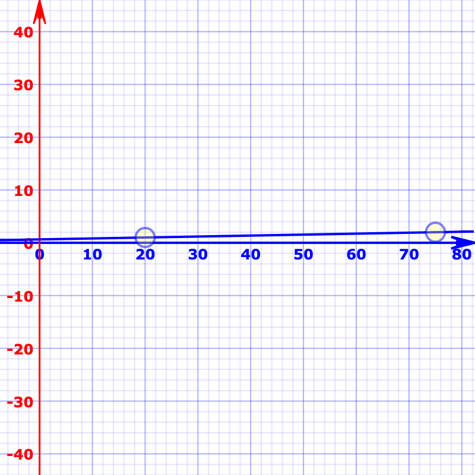

Fluid font size
How we currently do it:
:root {
font-size: 100%;
}
h1 {
font-size: 2rem; // 36px
}
@media (min-width: 720px) {
h1 {
font-size: 3rem; // 48px
}
}
@media (min-width: 1080px) {
h1 {
font-size: 4rem; // 56px
}
}
The core trickery comes from viewport units. We can literally set type in viewport units (e.g. font-size:
4vw), but the fluctuations in size are so extreme that it’s usually undesirable.
1. Rise until lock
font-size:
:root {
font-size: calc(100% + .5vw);
}
@media (min-width: 1200px) {
:root {
font-size: 1.5rem;
}
}Cons:
- hard to match the final values and the lock
- the
font-sizewould match the minumum value when the viewport gets 0 - we are still using a media query
2. CSS Locks

Below is a CSS lock that interpolates between a font-size of 16px and
24px between the two screen sizes of 320px and 1200px. The locking is
handled by the media query directly below it, without it the growth would continue at the same rate forever.
font-size:

:root {
font-size: calc(
16px +
(24 - 16) * (100vw - 320px)/(1200 - 320)
);
}
@media (min-width: 1200px) {
:root {
font-size: 24px;
}
}
Cons:
- (not really a problem) when going between the lower boundary, the
font-sizegets smaller than the minumum - a bit verbose and hard to figure out what's going on (learning curve)
- we still have a media query
3. The clamp()
font-size:
:root{
font-size: clamp(1rem, 1rem + .5vw, 1.5rem);
}Cons:
- hard to predict on which viewport size the final value kicks in
- the
font-sizewould match the minumum value when the viewport gets 0
4. The holy clamp() 👼 👼 👼
Overture:
- We pick a minimum and maximum font size, and a minimum and maximum viewport width. In our example,
that’s
1remand2remfor the font sizes, and320pxand1200pxfor the widths. - We convert the widths to
rems. Since1remon most browsers is16pxby default, that’s what we’re going to use. So, now the minimum and maximum viewport widths will be20remand75rem, respectively. - Here, we’re gonna lean a bit to the math side. When paired together, the viewport widths and the font sizes
make two points on an X and Y coordinate system, and those points make a line.


We kinda need that line — or rather its slope and its intersection with the Y axis to be more specific. Here’s how to calculate that:
slope = (maxFontSize - minFontSize) / (maxWidth - minWidth) yAxisIntersection = -minWidth * slope + minFontSizey = 0.01818181818181818x + 0.6363636363636364 - Now we build the clamp() function. The formula for the preferred value is:
So the function ends up being:preferredValue = yAxisIntersection[rem] + (slope * 100)[vw]font-size: clamp(1rem, 0.63rem + 1.8vw, 2rem);
font-size:
Cons:
- it only works as long as the root’s font size is the one you think it is — which is 16px in the previous
example — and never changes. There is only one approach we can use here, and it’s:
- making the necessary calculations in code on page load
- listening for changes to the root’s font size
- re-calculating everything if any changes take place. (utilizing CSS custom properties)
Final notes (from here):
- Please be careful with maximum text size. If you prevent the text from scaling up 200%, then that is a WCAG SC 1.4.4 failure at Level AA. Viewport units have their own call-out as a major risk in WCAG.
- Your text should never get smaller when the user zooms, and it certainly should not be smaller at 300% zoom.
- Test your fluid solution